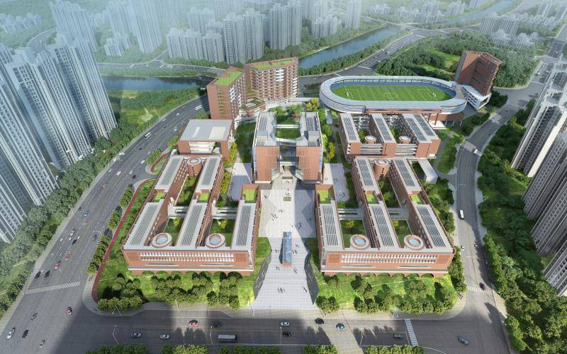

学校简介
学校概况
广州实验中学（Guangzhou Experimental Secondary School）坐落于广州市黄埔区，这里教育资源丰富，文化氛围浓厚，为学校的发展提供了得天独厚的环境。它是广州市教育局与广州市黄埔区人民政府共建、由广州市教育研究院与广州市黄埔区教育局共管的一所公办完全中学，是广东省义务教育标准化学校。学校严格遵循教育规律和人才成长规律，全面贯彻党的教育方针，积极落实立德树人的根本任务。
学校创办于2021年，虽办学历史不长，但发展势头迅猛。作为广州实验教育集团旗舰校，同时也是黄埔广州实验中学教育集团核心校，学校充分发挥集团化办学的优势，整合优质教育资源，实现资源共享、优势互补、共同发展。在集团的引领下，学校积极探索创新教育模式，不断提升教育教学质量。

办学规模
项目总投资超15亿元，定位为国家级示范性高中和广州市示范性高中，用地面积103000㎡（约154亩）。校园布局合理，建筑风格现代大气，充满人文气息。项目建成后开设初中30个班，高中60个班，能容纳4500名学生。学校致力于打造智能化、现代化的校园环境，为师生提供舒适、便捷的学习和工作条件。